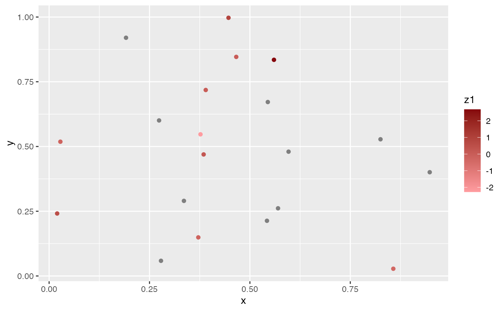
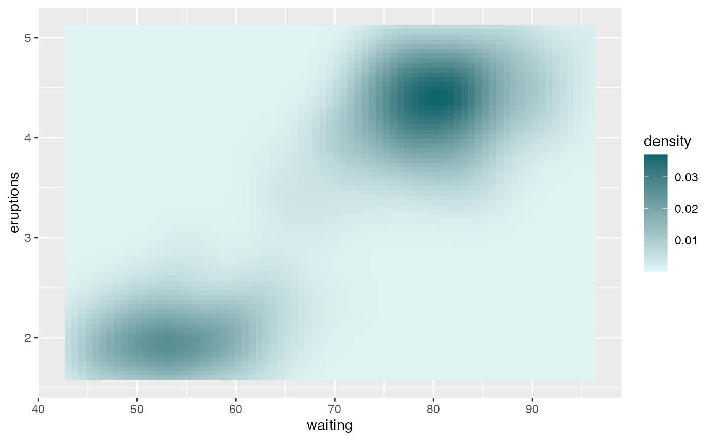

These create a gradient of colors based on the high and low value of a given hue from within the list of Sage branded colors.
scale_colour_sage_c(
...,
option = "royal",
low = NULL,
high = NULL,
na.value = "grey50",
guide = "colourbar",
aesthetics = "colour"
)
scale_fill_sage_c(
...,
option,
low = NULL,
high = NULL,
na.value = "grey50",
guide = "colourbar",
aesthetics = "fill"
)Options passed to ggplot2::continuous_scale()
One of the Sage colors. See names(sage_colors) for a list.
Colours for low and high ends of the gradient.
Colours for low and high ends of the gradient.
Colour to use for missing values
Type of legend. Use "colourbar" for continuous
colour bar, or "legend" for discrete colour legend.
Character string or vector of character strings listing the
name(s) of the aesthetic(s) that this scale works with. This can be useful, for
example, to apply colour settings to the colour and fill aesthetics at the
same time, via aesthetics = c("colour", "fill").
library("ggplot2")
df_na <- data.frame(
value = seq(1, 20),
x = runif(20),
y = runif(20),
z1 = c(rep(NA, 10), rnorm(10))
)
ggplot(df_na, aes(x, y)) +
geom_point(aes(colour = z1)) +
scale_colour_sage_c(option = "apple")

ggplot(faithfuld, aes(waiting, eruptions, fill = density)) +
geom_tile() +
scale_fill_sage_c(option = "powder")
